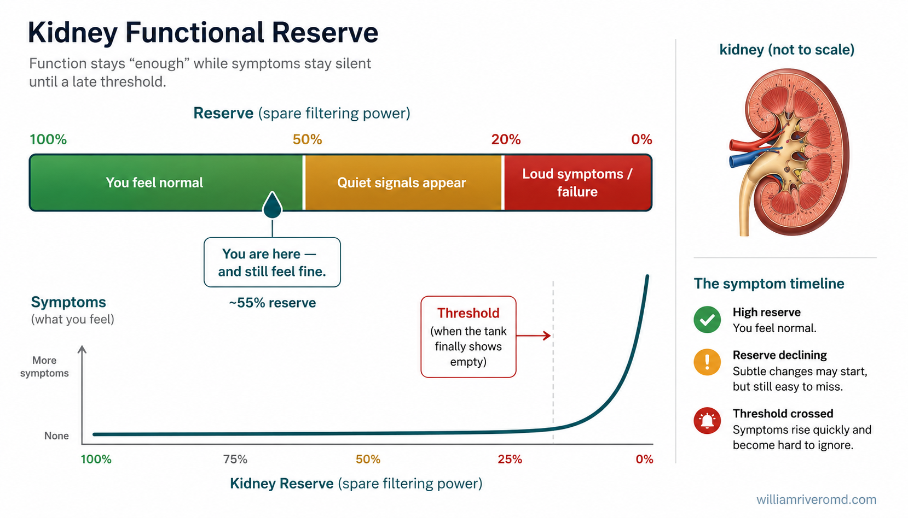
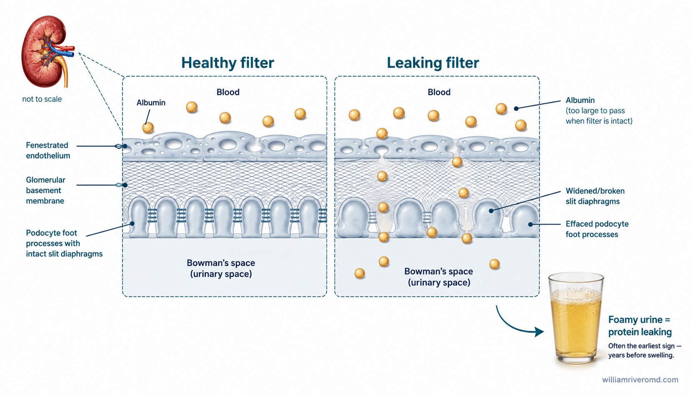
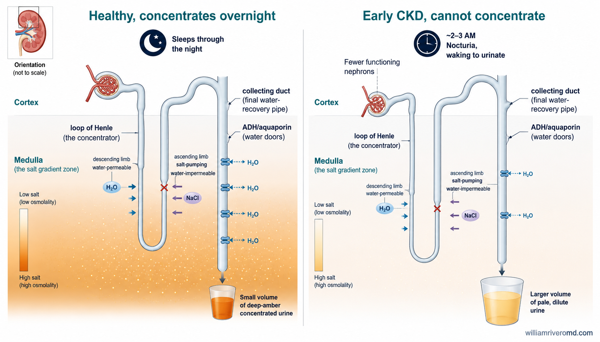
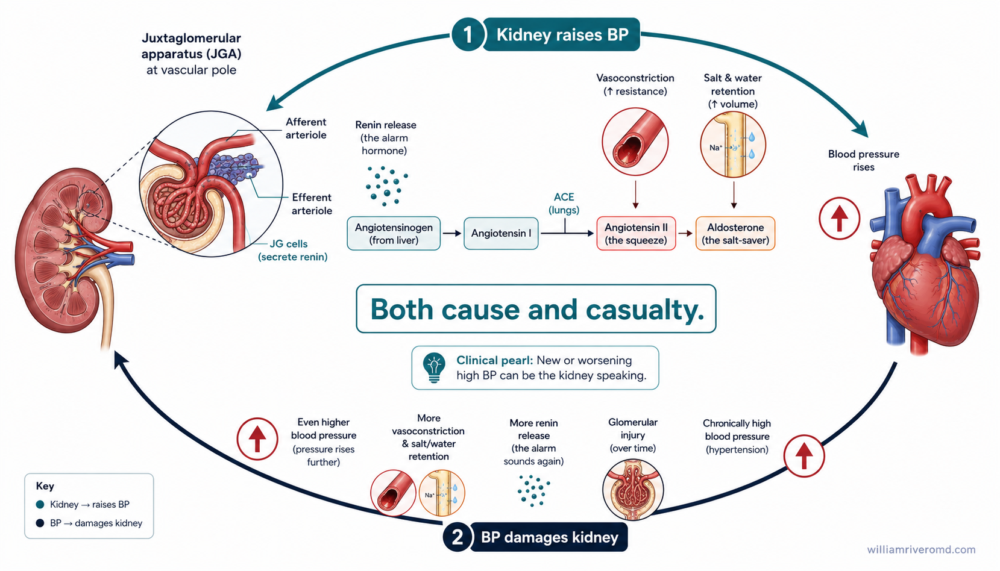
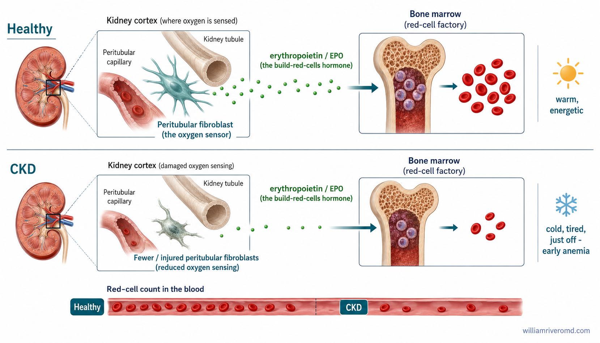
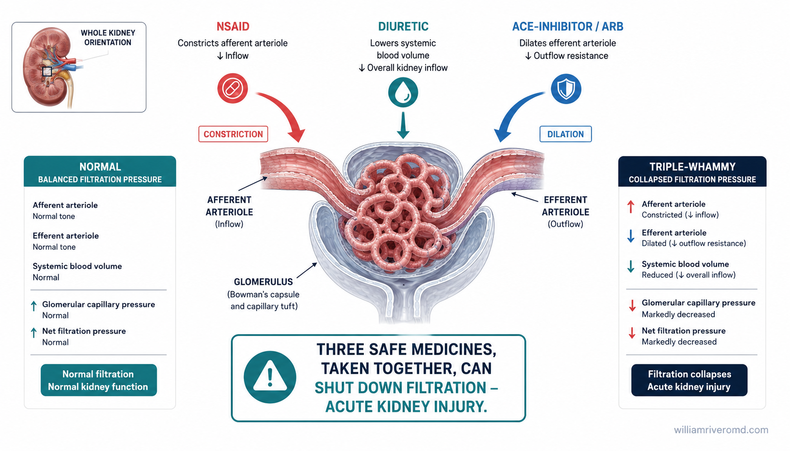
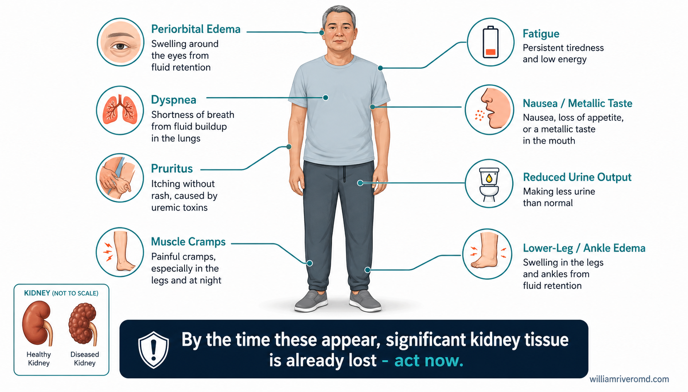
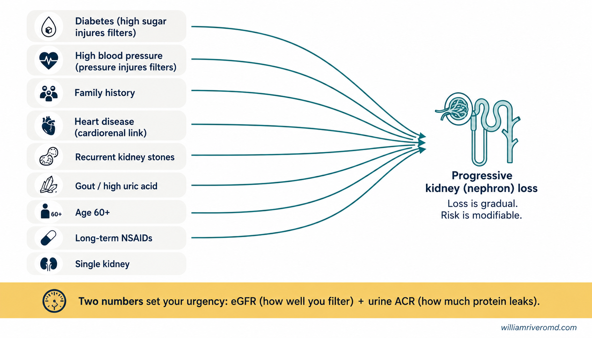
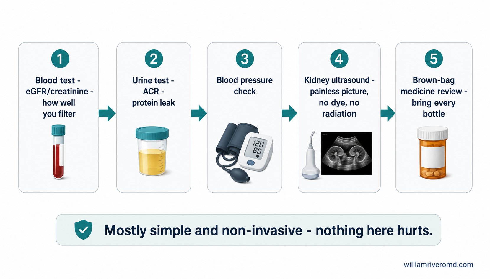
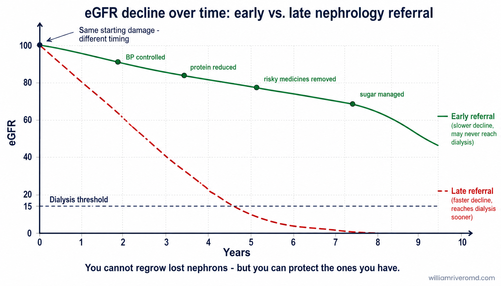

A Pattern That Keeps Repeating Isang Padron na Paulit-ulit na Nangyayari Usa ka Padron nga Paulit-ulit nga Nahitabo Metung a Padron a Miuli-uling Milyari
The story below is a composite — built from patterns this guide's author has seen repeatedly in clinic, not any single identifiable patient. Every detail reflects something common, not something rare. Ang kuwento sa ibaba ay pinagsama-samang paglalarawan — hinango sa mga padron na paulit-ulit na nakikita ng may-akda ng gabay na ito sa klinika, hindi ang isang partikular na pasyente. Bawat detalye ay sumasalamin sa isang bagay na karaniwan, hindi bihira. Ang istorya sa ubos usa ka gitipon nga paghulagway — gikan sa mga padron nga balik-balik nakita sa awtor niini nga giya sa klinika, dili sa usa ka piho nga pasyente. Ang matag detalye nagpakita og butang nga komon, dili talagsaon. Ing kasalesayan king lalam metung yang kekatipun a laraman — mibaki karing padron a miuli-uling mekita ning gumawa ning gabay a ini king klinika, e king metung a piling pasyenti. Balang detalye mikakalarawan yang metung a bage a kalimitan, e mimalyari.
Three years agoTatlong taon na ang nakalipasTulo ka tuig ang milabayAtlung banua na ing milabas
Foamy urine a few times a month — dismissed as not drinking enough water.Malabusang ihi ilang beses kada buwan — binalewala bilang kulang lang sa tubig.Malumpay nga ihi pipila ka beses kada bulan — gi-ignore isip kulang ra sa tubig.Mabusang ihi pilan a beses balang bulan — binalewala bilang kulang lang king danum.
Two years agoDalawang taon na ang nakalipasDuha ka tuig ang milabayAduang banua na ing milabas
Ankle swelling by the end of the school day — blamed on standing all day teaching.Pamamaga ng bukong-bukong sa pagtatapos ng araw sa paaralan — isinisi sa buong araw na pagtayo habang nagtuturo.Paghubag sa bukton pag-abot sa hapon sa eskwelahan — gibasol sa tibuok adlaw nga pagtindog samtang nagtudlo.Pamamaga ning bukung-bukung king pamitas ning aldo king eskwelahan — isisi king mabilug a aldo a pamalage kabang mag-turu.
Eighteen months agoLabing-walong buwan na ang nakalipasNapulog-walo ka bulan ang milabayLabwalung bulan na ing milabas
Waking two or three times a night to urinate — thought to be "just part of getting older."Nagigising ng dalawa o tatlong beses sa gabi para umihi — inakalang "normal lang sa pagtanda."Nagmata og duha o tulo ka beses sa gabii aron mangihi — gihunahuna nga "normal ra sa pagkatigulang."Mibubukyat kaduang o katlung beses king bengi para umihi — inisip a "normal lang king pamangulu."
One year agoIsang taon na ang nakalipasUsa ka tuig ang milabayMetung banua na ing milabas
Persistent tiredness and feeling cold — blamed on stress and a heavy workload.Patuloy na pagkapagod at pakiramdam na malamig — isinisi sa stress at mabigat na trabaho.Padayon nga kapoy ug pagbati og tugnaw — gibasol sa stress ug bug-at nga trabaho.Metung tuluid a kapagalan at pamiramdam a malamig — isisi king stress at mabayat a trabaju.
Six months agoAnim na buwan na ang nakalipasUnom ka bulan ang milabayAnam bulan na ing milabas
Itchy skin with no rash — tried different lotions, blamed on an allergy.Makating balat na walang rashes — sinubukan ang iba't ibang losyon, isinisi sa allergy.Katol nga panit nga walay rashes — gisulayan ang lain-laing lotion, gibasol sa allergy.Makating balat a alang rashes — sinubuk ya deng dobula-doblan a lotion, isisi king allergy.
Two months agoDalawang buwan na ang nakalipasDuha ka bulan ang milabayAduang bulan na ing milabas
Nausea, poor appetite, and unintentional weight loss — thought to be a stomach bug that wouldn't go away.Pagkasuka, kawalan ng ganang kumain, at hindi sinasadyang pagbaba ng timbang — inakalang stomach bug na ayaw nang mawala.Kalibang, kawala sa ganang mokaon, ug dili tinuyo nga pagkunhod sa timbang — gihunahuna nga stomach bug nga dili mawala.Panuya, kaawan ning ganang mangan, at ali sinadyang pamaba ning bayat — inisip a stomach bug a e mawala.
The day of the visitAng araw ng konsultaAng adlaw sa konsultaIng aldo ning pamialaus
Brought to the emergency room breathless and unusually drowsy. First-ever kidney function test showed advanced failure. Diagnosis: CKD (chronic kidney disease) Stage 5 — kidney failure. Emergency dialysis started that same day through a temporary neck catheter; there had been no time to plan an AV fistula.Dinala sa emergency room na hingal na hingal at hindi pangkaraniwang antok. Ang una niyang kidney function test ay nagpakita ng malalang pagbagsak. Diagnosis: CKD Stage 5 — pagkabigo ng bato. Nagsimula ang emergency dialysis sa mismong araw na iyon sa pamamagitan ng pansamantalang catheter sa leeg; wala nang oras para planuhin ang AV fistula.Gidala sa emergency room nga gikapoy sa ginhawa ug talagsaon ka tulog. Ang una gyud niyang kidney function test nagpakita og grabe nga pagkanaog. Diagnosis: CKD Stage 5 — pagkapakyas sa kidney. Nagsugod ang emergency dialysis sa mao rang adlaw pinaagi sa temporaryong catheter sa liog; wala nay panahon para planohon ang AV fistula.Yakit king emergency room a mikakahingal at ali kanita katulugan. Ing enang kidney function test na mikapakit king maragul a pamaguran. Diagnosis: CKD Stage 5 — pamaguran ning bato. Migumpisa ing emergency dialysis king mumuya a aldo king pamamilatan ning pansamantalang catheter king batal; alang neng oras para planuan ing AV fistula.
Every one of the "quiet signals" in Part 1 below was present in this story — for up to three years before the diagnosis. Nothing about this case is unusual. This is the pattern this guide exists to interrupt. Bawat isa sa mga "tahimik na senyales" sa Bahagi 1 sa ibaba ay naroroon sa kuwentong ito — hanggang tatlong taon bago ang diagnosis. Walang kakaiba sa kasong ito. Ito ang padron na nais tigilin ng gabay na ito. Ang matag usa sa mga "hilom nga timailhan" sa Bahin 1 sa ubos naa niini nga istorya — hangtod tulo ka tuig una sa diagnosis. Walay talagsaon niini nga kaso. Kini ang padron nga gusto undangon niini nga giya. Balang metung karing "malagung tanda" king Dake 1 king lalam ati king kasalesayan a ini — anggang atlung banua bayu ing diagnosis. Alang mekapali kening kaso. Iti ing padron a buri pituknangan ning gabay a ini.
The Quiet Signals Ang mga Tahimik na Senyales Ang mga Hilom nga Timailhan Reng Malagung Tanda
Kidneys are quiet organs. They don't hurt when they're struggling, and they keep the blood tests looking "almost normal" for a long time by working the surviving filters harder. That's why the earliest signs are easy to shrug off. Here are eight of them. None on its own is proof of kidney disease — but each is a reason to check, not to wait. Tahimik na organ ang bato. Hindi ito sumasakit kahit nahihirapan na, at pinapanatili nitong halos normal ang resulta ng blood test sa mahabang panahon sa pamamagitan ng mas mabigat na pagtatrabaho ng mga natitirang filter. Kaya naman madaling balewalain ang mga unang senyales. Narito ang walo sa mga ito. Wala man sa mga ito ang sapat na patunay ng sakit sa bato — pero bawat isa ay dahilan para magpatingin, hindi para maghintay. Hilom nga organ ang kidney. Wala kini masakit bisan naglisod na, ug gipabilin niini nga daw normal ang resulta sa blood test sa dugay nga panahon pinaagi sa mas kusog nga pagtrabaho sa nahibiling mga filter. Mao nga sayon lang i-ignore ang unang mga timailhan. Ania ang walo niini. Wala niini ang igo nga pamatuod sa sakit sa kidney — apan ang matag usa hinungdan na mopatan-aw, dili maghulat. Malagung organ deng bato. Ali la sasakit anggang mumasakit na la, at pipilitan da lang ing resulta ning blood test a mamalting normal king matagal a panaun ali't lalu la mangasakit deng atyu keng surviving filters. Kanita mayadyad lang lawasan deng anyang tanda. Ati ilang walu karini. Alang metung karini ing pamaneknekan ning sakit ning bato — dapot balamu deng lahat rason la para pamialaus, e para pamitas.
Please don't wait for it to feel dramaticHuwag nang hintayin na maging seryoso ang pakiramdamAyaw na paghulat nga mobati og seryosoE ne pabustan ing pamiramdam a mipalyaring seryoso
I'm seeing more first-time referrals to a nephrologist arrive only after the patient has already reached CKD Stage 5 — kidney failure. Looking back, most of these patients had one or more of the quiet signals above for months, sometimes years, and wrote them off as nothing. A subtle symptom is still a real symptom. Please don't wait for it to feel dramatic before you take it seriously.Lalo akong nakakakita ng mga pasyenteng unang beses na nagpapatingin sa nephrologist, pero pagdating na nila sa CKD Stage 5 na — pagkabigo na ng bato. Sa muling pagtingin, karamihan sa kanila ay matagal nang may isa o higit pa sa mga tahimik na senyales sa itaas — buwan, kung minsan taon — at binalewala lamang ito. Ang bahagyang sintomas ay totoong sintomas pa rin. Huwag nang hintayin na maging seryoso ang pakiramdam bago mo ito seryosohin.Sagad nako makakita og mga pasyente nga una beses nagpatan-aw sa nephrologist, apan pag-abot na nila sa CKD Stage 5 na — pagkapakyas na sa kidney. Kung tan-awon balik, kadaghanan niini adunay usa o labaw pa sa hilom nga mga timailhan sa taas sulod sa mga bulan, usahay tuig, ug gi-ignore lang kini. Ang gamay nga simtomas usa gihapon ka tinuod nga simtomas. Ayaw na paghulat nga mobati og seryoso ang imong bation una nimo kini seryosohon.Mas dakal na kung ing makakit kareng pasyenteng enang pamialaus da king nephrologist, dapot pagdatang da king CKD Stage 5 no — pamaguran no ning bato. Nung babalikan lawan, karakalan karela ating metung o pilan pa karing malagung tanda king babo king dilan bulan, miminsan banua, at binalewalang lub karin. Ing malating sintoma pisan yang tutuking sintoma. E ne pabustan ing pamiramdam a mipalyaring seryoso bayu mu la ing seryosohan.

The core idea of this guide: kidney function (green → amber → red) can fall a long way before symptoms rise. By the time you feel it, the reserve is mostly spent.Ang pangunahing ideya ng gabay na ito: ang gana ng bato (berde → amber → pula) ay maaaring bumaba nang malayo bago tumaas ang mga sintomas. Sa oras na maramdaman mo ito, halos naubos na ang reserba.Ang pangunahing ideya niini nga giya: ang gana sa kidney (berde → amber → pula) mahimong mikanaog na og layo sa wala pa mosaka ang mga simtomas. Pag-abot nga imong mabation, halos nahurot na ang reserba.Ing pangabaldugan a ideya ning gabay a ini: ing dapat ning bato (berde → amber → red) mangyaring migbaba lakuan bayu tumas de reng sintomas. Anggang mapansinan mu na, mayap ne meubus ing reserba.
Foamy or bubbly urine that doesn't clearMalabusa o may bulang ihi na hindi nawawalaMalumpay o may bula nga ihi nga dili mahanawMabusang ihi a e mawala
Protein leaking through the glomerular filter — often the earliest sign, years before any swelling.Protina na tumutulo sa glomerular filter — kadalasan ang pinakaunang senyales, taon bago pa magkaroon ng pamamaga.Protina nga nitulo agi sa glomerular filter — sagad ang pinakauna nga timailhan, tuig sa wala pa ang bisan unsang paghubag.Protina a mibubulus king glomerular filter — malimit ya ing enagana tanda, ilang banua bayu ing pamamaga.
What to do: ask for a urine protein test (ACR) at your next visit.Ano ang gawin: humingi ng urine protein test (ACR) sa susunod mong bisita.Unsa ang buhaton: pangayo og urine protein test (ACR) sa sunod nimong bisita.Nanu ing dapat gawan: manaman kang urine protein test (ACR) king susunod mung bisita.

A healthy filter (left) keeps albumin in the blood; a damaged filter (right) lets it leak through — the same albumin that shows up as urine foam.Pinapanatili ng malusog na filter (kaliwa) ang albumin sa dugo; pinapayagan ng nasirang filter (kanan) na tumulo ito — ang parehong albumin na lumalabas bilang bula sa ihi.Ang himsog nga filter (wala) nagpabilin sa albumin sa dugo; ang naguba nga filter (tuo) nagpalusot niini — ang mao rang albumin nga mogawas isip bula sa ihi.Ing mayap a filter (kaili) mikakasagip king albumin king dala; ing masakit a filter (kanan) mibubulus ini — ing pareparehung albumin a lulwal bilang bula king ihi.
Waking at night to urinate (nocturia)Paggising sa gabi para umihi (nocturia)Pagmata sa gabii aron mangihi (nocturia)Pamukyat king bengi para umihi (nocturia)
An early loss of the kidney's ability to concentrate urine (a tubular function) — the tank stops holding overnight.Maagang pagkawala ng kakayahan ng bato na paikliin ang ihi (isang gawain ng tubule) — hindi na kayang panatilihin ng tangke ang laman nito sa buong magdamag.Sayo nga pagkawala sa katakos sa kidney sa pag-concentrate sa ihi (usa ka bahin sa tubule) — dili na makadala ang tangke sa tibuok gabii.Maranun a kayaus ning kayabang ning bato a mamaputul ing ihi (metung yang gawa ning tubule) — ali ne asagip ing tangke king mabilug a bengi.
What to do: mention it — a simple urine test can check your kidney's concentrating ability.Ano ang gawin: banggitin ito — may simpleng urine test para suriin ang kakayahan ng bato na paikliin ang ihi.Unsa ang buhaton: hisgoti kini — adunay yano nga urine test aron susihon ang katakos sa kidney sa pag-concentrate.Nanu ing dapat gawan: banggitin ini — ati yang mayadyad a urine test para lawan ing kayabang ning bato a mamaputul ing ihi.

A healthy kidney concentrates urine strongly overnight; early CKD blunts that gradient — so the kidney makes more, paler urine, and you wake up to pass it.Malakas na pinapaikli ng malusog na bato ang ihi sa gabi; pinapahina ng maagang CKD ang gradient na ito — kaya gumagawa ang bato ng mas maraming, mas maputlang ihi, at ikaw ay nagigising para umihi.Kusganon nga giconcentrate sa himsog nga kidney ang ihi sa gabii; gipahuyang sa sayo nga CKD kanang gradient — mao nga naghimo ang kidney og mas daghan, mas luspad nga ihi, ug ikaw mahigmata aron mangihi.Mabilug yang mamaputul ing mayap a bato king ihi king bengi; pipeynan ne ning maranun a CKD ing gradient a ini — kanita gagawa ing bato king mas dakal, mas mapusawng ihi, at mibubukyat ka para umihi.
Blood pressure creeping upwardUnti-unting tumataas na presyon ng dugoAnam-anam nga pagsaka sa presyon sa dugoDutung dutung a tumatas a presyon ning dala
The kidney is both cause and casualty of high BP. New or worsening hypertension is a renal red flag, not just a heart issue.Ang bato ay parehong sanhi at biktima ng mataas na presyon. Ang bago o lumalalang hypertension ay senyales mula sa bato, hindi lang usapin ng puso.Ang kidney parehas nga hinungdan ug biktima sa taas nga presyon. Ang bag-o o nagkagrabe nga hypertension usa ka timailhan gikan sa kidney, dili lamang isyu sa kasingkasing.Ing bato metung yang dake at kayabe ing biktima ning matas a presyon. Ing bayu o milala pang hypertension metung yang tanda a manibat king bato, e lang bage king pusu.
What to do: recheck your BP and ask your doctor to also check your kidney function.Ano ang gawin: sukatin ulit ang presyon at hilingin sa doktor na tingnan din ang gana ng bato.Unsa ang buhaton: sukda pag-usab ang presyon ug pangayo sa doktor nga tan-awon usab ang gana sa kidney.Nanu ing dapat gawan: pamalanan uli ing presyon at pakiwan ing doktor a lawan murin ing dapat ning bato.

The kidney and blood pressure feed each other in both directions: low kidney blood flow raises pressure through the renin-angiotensin system (RAAS), and chronic high pressure damages the kidney in return.Ang bato at presyon ng dugo ay magkasabay na nag-eepekto sa isa't isa: ang mababang daloy ng dugo sa bato ay nagtataas ng presyon sa pamamagitan ng renin-angiotensin system (RAAS), at ang malalang mataas na presyon naman ay sumisira sa bato.Ang kidney ug presyon sa dugo nag-apekto sa usag-usa sa duha ka direksyon: ang ubos nga dagan sa dugo sa kidney nagpataas sa presyon pinaagi sa renin-angiotensin system (RAAS), ug ang malungtaron nga taas nga presyon nagdaot balik sa kidney.Ing bato at presyon ning dala mangapaburung la king aduang direksyun: ing mababang delalan ning dala king bato mitas ing presyon king pamamilatan ning renin-angiotensin system (RAAS), at ing matagal a matas a presyon mangasakit yang mibalik king bato.
- RAAS
- Renin-angiotensin-aldosterone system — the hormone chain that raises blood pressure and retains salt/water.Ang chain ng hormone na nagtataas ng presyon at nagpapanatili ng asin/tubig.Ang kadena sa hormone nga nagpataas sa presyon ug nagpabilin sa asin/tubig.Ing kadena ning hormone a mitas king presyon at mikakasagip king asin/danum.
Puffy eyes in the morningNamamagang mata sa umagaHubag nga mga mata sa buntagMamimintug a mata king abak
Subtle protein loss pulling fluid into the tissues — easily blamed on a salty dinner or a bad night's sleep.Bahagyang pagkawala ng protina na humihila ng tubig papunta sa mga tisyu — madaling isisi sa maalat na hapunan o kulang na tulog.Gamay nga pagkawala sa protina nga nagabira sa tubig padulong sa mga tisyu — sayon i-basol sa parat nga panihapon o kulang nga tulog.Malating kayaus na ning protina a mangalagwa king danum ampong tisyu — mayadyad yang isisi king malat a penibagan o kulang a keture.
What to do: if it happens more than twice a week, ask for a urine protein check.Ano ang gawin: kung mangyayari ito nang higit sa dalawang beses kada linggo, humingi ng urine protein check.Unsa ang buhaton: kung mahitabo kini kapin sa duha ka beses kada semana, pangayo og urine protein check.Nanu ing dapat gawan: nung mangyari ini a labis king aduang beses balang lingu, manaman kang urine protein check.
Feeling cold, tired, or "just off"Pakiramdam na malamig, pagod, o "iba lang"Bation nga tugnaw, kapoy, o "lahi ra"Malamig, pagal, o "e balamu keka" a pamiramdam
Early anemia: failing kidneys make less erythropoietin (EPO), the hormone that tells the marrow to build red blood cells.Maagang anemia: gumagawa ng mas kaunting erythropoietin (EPO) ang humihinang bato, ang hormone na nag-uutos sa bone marrow na gumawa ng pulang selula ng dugo.Sayo nga anemia: naghimo og gamay nga erythropoietin (EPO) ang naluya nga kidney, ang hormone nga nagsulti sa bone marrow nga maghimo og pulang selyula sa dugo.Maranun a anemia: mikagawa yang malating erythropoietin (EPO) ing malwang bato, ing hormone a mangamuan king bone marrow a gumawa lang red blood cells.
What to do: a simple blood test (CBC) can check for anemia and its cause.Ano ang gawin: may simpleng blood test (CBC) para tingnan kung may anemia at ano ang sanhi nito.Unsa ang buhaton: adunay yano nga blood test (CBC) aron susihon kung adunay anemia ug unsa ang hinungdan.Nanu ing dapat gawan: ati yang mayadyad a blood test (CBC) para lawan nung ating anemia at nanu ing sanhi na.

Healthy kidneys signal the bone marrow to build red blood cells via erythropoietin (EPO); as kidney function falls, EPO falls too — an early, easy-to-miss cause of feeling cold and tired.Nagbibigay-senyales ang malusog na bato sa bone marrow na gumawa ng pulang selula ng dugo sa pamamagitan ng erythropoietin (EPO); habang bumabagsak ang gana ng bato, bumabagsak din ang EPO — isang maagang, madaling hindi mapansing sanhi ng pagkaramdam ng lamig at pagod.Ang himsog nga kidney nagsenyas sa bone marrow nga maghimo og pulang selyula sa dugo pinaagi sa erythropoietin (EPO); samtang mikanaog ang gana sa kidney, mikanaog usab ang EPO — usa ka sayo, sayon i-ignore nga hinungdan sa pagbati og tugnaw ug kapoy.Mangamuan deng mayap a bato king bone marrow a gumawa lang red blood cells king pamamilatan ning erythropoietin (EPO); kabang mikababa ing dapat ning bato, mikakababa mu rin ing EPO — metung yang maranun, mayadyad e mapansin a sanhi ning pamiramdam a malamig at pagal.
Itchy skin with no rashMakating balat na walang rashesKatol nga panit nga walay rashesMakating balat a alang rashes
Early mineral and waste-product (uremic) changes the skin feels before blood tests flag them.Maagang pagbabago sa mineral at usok ng dumi (uremic) na nararamdaman ng balat bago pa ito lumabas sa blood test.Sayo nga kausaban sa mineral ug hugaw (uremic) nga mabation sa panit sa wala pa kini mogawas sa blood test.Maranun a pamalit da reng mineral at atbus (uremic) a mipamiramdam ing balat bayu la mekitang blood test.
What to do: mention it at your next lab visit — it may show up before your labs do.Ano ang gawin: banggitin ito sa susunod mong lab visit — maaaring lumitaw ito bago pa lumabas sa lab results.Unsa ang buhaton: hisgoti kini sa sunod nimong lab visit — mahimong mogawas kini una sa lab results.Nanu ing dapat gawan: banggitin ini king susunod mung lab visit — mangyaring lumual ini bayu la lumual deng lab results.
A single abnormal blood or urine testIsang di-normal na resulta ng blood o urine testUsa ka dili normal nga resulta sa blood o urine testMetung a e normal a resulta ning blood o urine test
Even one high creatinine or one positive protein result deserves a look — not an automatic "repeat in a year."Kahit isang beses lang tumaas ang creatinine o positibo sa protina, karapat-dapat itong tingnan — hindi lang basta "ulitin sa isang taon."Bisan usa lang ka higayon nga misaka ang creatinine o positibo sa protina, angay kining tan-awon — dili lang basta "usbon human sa usa ka tuig."Agiang metung yang tumas a creatinine o metung a positibong protina, dapat lang lawan — e ing basta "uliting bulan king metung banua."
What to do: ask for it to be repeated within the same week, not "next year."Ano ang gawin: hilingin na ulitin ito sa parehong linggo, hindi "sa susunod na taon."Unsa ang buhaton: pangayo nga usbon kini sa mao rang semana, dili "sunod tuig."Nanu ing dapat gawan: pakiwan a uliting ini king mumuya a lingu, e "king makabalik banua."
Taking several medicines — prescribed AND non-prescribed (polypharmacy)Umiinom ng maraming gamot — reseta AT hindi reseta (polypharmacy)Nag-inom og daghang tambal — resita UG dili resita (polypharmacy)Manginum king daralang gamut — reseta AT ali reseta (polypharmacy)
The kidney is the body's main drug-clearance organ. As function falls, drugs and their by-products pile up — the same dose quietly becomes a higher effective dose.Ang bato ang pangunahing organ na nag-aalis ng gamot sa katawan. Habang bumabagsak ang gana nito, naiipon ang mga gamot at ang mga by-product nito — ang parehong dosis ay tahimik na nagiging mas mataas na epektibong dosis.Ang kidney ang panguna nga organ nga naghawan sa tambal gikan sa lawas. Samtang mikanaog ang gana niini, natapok ang mga tambal ug ang ilang by-product — ang mao rang dosis hilom nga nahimong mas taas nga epektibo nga dosis.Ing bato ing pangabaldugan a organ a manalili king gamut king lawan. Kabang mikababa ing dapat na, mikatipun la reng gamut ampong by-products da — ing mumuya a dosis mapalyari yang mitas a masaup a dosis.
When your medicine cabinet becomes a kidney riskKapag ang iyong gamutan ay naging panganib sa batoKung ang imong tigumanan sa tambal mahimong peligro sa kidneyIstung ing kaban da ring gamut mipalyari yang peligru king bato
Your kidneys clear most of the medicines you take. What is perfectly safe at an eGFR of 90 can become toxic at an eGFR of 45 — because the same dose now leaves the body more slowly and builds up. The more products you take, the more chances for one of them (or a combination) to quietly injure the filters.Karamihan sa gamot na iniinom mo ay inaalis ng iyong mga bato. Ang ganap na ligtas sa eGFR na 90 ay maaaring maging nakakalason sa eGFR na 45 — dahil ang parehong dosis ay mas mabagal nang umaalis sa katawan at naiipon. Kung mas marami kang iniinom, mas malaki ang tsansang isa sa mga ito (o kumbinasyon nito) ang tahimik na makakasira sa mga filter.Kadaghanan sa tambal nga imong giinom gikuha sa imong mga kidney. Ang hingpit nga luwas sa eGFR nga 90 mahimong makahilo sa eGFR nga 45 — kay ang mao rang dosis mohawa na og hinay sa lawas ug matapok. Kung daghan ka og giinom, mas dako ang tsansa nga usa niini (o kombinasyon) ang hilom nga makadaot sa mga filter.Maragul a dake da ring gamut a ininum mu ing manalili ring bato mu. Ing lubus a matiwasay king eGFR a 90 mangyaring mipalyari yang makasakit king eGFR a 45 — uling ing mumuya a dosis mikaubus yang maluat king lawan at mikatipun. Nung mas dakal kang ininum, mas maragul ing tsansa a metung karela (o kumbinasyun da) ing tainung mangasakit karing filter.
The culprits patients rarely suspect:Ang mga salarin na bihirang pagdudahan ng pasyente:Ang mga sad-an nga panagsa lang duda-an sa pasyente:Reng dake a bengi mengaingat deng pasyenti:
- Pain relievers (NSAIDs) — mefenamic acid, ibuprofen, celecoxib. They tighten the tiny artery entering the filter (the afferent arteriole), cutting blood flow to the kidney.Pampawala ng sakit (NSAIDs) — mefenamic acid, ibuprofen, celecoxib. Kinikipot nila ang maliit na arterya na papasok sa filter (afferent arteriole), na bumabawas sa daloy ng dugo papunta sa bato.Pampahupay sa sakit (NSAIDs) — mefenamic acid, ibuprofen, celecoxib. Gipahigot nila ang gamay nga arterya nga misulod sa filter (afferent arteriole), nga nagputol sa dagan sa dugo padulong sa kidney.Pamakas king sakit (NSAIDs) — mefenamic acid, ibuprofen, celecoxib. Kikitkitan da ing malating arterya a tutuking king filter (afferent arteriole), a mangamuklat king dala a tutuki king bato.
- Herbal, slimming, whitening, and "pampapayat / pampataba" products — often unregulated, sometimes contaminated, and rarely disclosed to the doctor.Herbal, pampapayat, pamputi, at katulad na produkto — kadalasang walang regulasyon, minsan kontaminado, at bihirang sinasabi sa doktor.Herbal, pampa-niwang, pamuti, ug susama nga produkto — sagad walay regulasyon, usahay kontaminado, ug panagsa lang gisulti sa doktor.Herbal, pampapayat, pampaputi, at anti a produkto — malimit lang alang regulasyun, miminsan kontaminado, at bengi lang isabi king doktor.
- Long-term acid reducers (PPIs) — can inflame the kidney's filtering tissue (interstitial nephritis) over time.Matagalang gamot sa acid (PPIs) — maaaring magpaalab sa tisyu ng bato (interstitial nephritis) sa paglipas ng panahon.Dugay nga gamot sa acid (PPIs) — mahimong makapasilaob sa tisyu sa kidney (interstitial nephritis) sa paglabay sa panahon.Matagal a gamut king acid (PPIs) — mangyaring makapamipiu king tisyu ning bato (interstitial nephritis) king pamalaus na ning panaun.
- "Cocktails" from several doctors who never see each other's prescription lists.Halo-halong gamot mula sa iba't ibang doktor na hindi nagkakaalaman sa reseta ng isa't isa.Sagul-sagol nga tambal gikan sa lain-laing doktor nga wala magkasabot sa resita sa usag-usa.Pamiglolo a gamut manibat karing dobula-doblan a doktor a e la agyalan deng reseta ra.
Three ways medicines quietly cause harm:Tatlong paraan kung paano tahimik na nakakasama ang gamot:Tulo ka paagi kung giunsa hilom nga makadaot ang tambal:Atlung paralan nung makananu tainung mangasaup deng gamut:
- Wrong dose for your current kidney function.Maling dosis para sa kasalukuyang gana ng bato mo.Sayop nga dosis alang sa karon nga gana sa imong kidney.Alaus a dosis para king kasalukuyan a dapat ning bato mu.
- Wrong timing / dangerous stacking — the classic triple whammy: an NSAID + an ACE-inhibitor or ARB (angiotensin receptor blocker) + a diuretic, taken together, can collapse kidney filtration.Maling oras / mapanganib na pagsasama-sama — ang klasikong "triple whammy": ang NSAID + ACE-inhibitor o ARB + diuretic, kapag sabay na iniinom, ay maaaring magpabagsak sa filtration ng bato.Sayop nga panahon / peligroso nga pagsagol — ang klasiko nga "triple whammy": ang NSAID + ACE-inhibitor o ARB + diuretic, kung inuman dungan, mahimong makapahugno sa filtration sa kidney.Alaus a oras / makasakit a pamagsama — ing tradisyunal a "triple whammy": ing NSAID + ACE-inhibitor o ARB + diuretic, nung sabaying ininum, mangyaring mangagba ing filtration ning bato.
- No one reconciling the full list — prescription + over-the-counter + herbal.Walang tumitingin sa buong listahan — reseta + hindi-reseta + herbal.Walay nagtan-aw sa tibuok listahan — resita + dili-resita + herbal.Alang mangaliwat king mabilug a listahan — reseta + ali-reseta + herbal.
What to do: bring every bottle — vitamins, herbals, pain relievers, supplements included — to your visit. This "brown-bag review" lets a nephrologist renally dose-adjust or safely stop what you don't need. Fewer, safer, right-dosed.Ano ang gawin: dalhin ang lahat ng bote — bitamina, herbal, pampawala ng sakit, supplement, lahat — sa iyong konsulta. Ang "brown-bag review" na ito ay nagbibigay-daan sa nephrologist na iayon ang dosis o tigilan nang ligtas ang hindi mo na kailangan. Mas kaunti, mas ligtas, tamang dosis.Unsa ang buhaton: dad-a ang tanang botelya — bitamina, herbal, pampahupay sa sakit, supplement, tanan — sa imong konsulta. Kining "brown-bag review" nagtugot sa nephrologist nga i-adjust ang dosis o luwas nga ihunong ang dili nimo kinahanglan. Gamay, luwas, husto nga dosis.Nanu ing dapat gawan: yakit no ngan reng dagul — bitamina, herbal, pamakas king sakit, supplement, lahat — king pamialaus mu. Ining "brown-bag review" mibye lako king nephrologist a i-adjust ing dosis o pabustan a matiwasay ing e mu kailangan. Migkulang, mas matiwasay, tamang dosis.
(Want the full picture? See our companion guide, Multiple Medicines and Your Kidneys →) (Gusto mo ba ng buong larawan? Tingnan ang kasamang gabay, Maraming Gamot at ang Iyong mga Bato →) (Gusto ba nimo sa tibuok hulagway? Tan-awa ang kauban nga giya, Daghang Tambal ug ang Imong mga Kidney →) (Buri mu ing lubus a laraman? Lawan ing kaguing gabay, Dakal a Gamut at Reng Bato Mu →)

The "triple whammy": an NSAID narrows the inflow vessel, an ACE-inhibitor or ARB widens the outflow vessel, and a diuretic drops fluid volume — together, three normally safe medicines can shut down kidney filtration.Ang "triple whammy": kinikipot ng NSAID ang daluyan papasok, pinalapad naman ng ACE-inhibitor o ARB ang daluyan palabas, at binabawasan ng diuretic ang tubig sa katawan — kung sabay, tatlong karaniwang ligtas na gamot ang maaaring magpahinto sa pag-filter ng bato.Ang "triple whammy": gipahigot sa NSAID ang agianan pasulod, gipadako sa ACE-inhibitor o ARB ang agianan pagawas, ug gikuhaan sa diuretic ang tubig sa lawas — kung dungan, tulo ka kasagarang luwas nga tambal mahimong makapahunong sa pag-filter sa kidney.Ing "triple whammy": kikitkitan ne ning NSAID ing dinaralanan a lulub, palapdan ne ning ACE-inhibitor o ARB ing dinaralanan a lulwal, at ibababa ne ning diuretic ing danum king lawan — nung sabaying gawa, atlung kalimit-limitan a matiwasay a gamut mangyaring mangasumpang king pamag-filter ning bato.
- NSAID
- Non-steroidal anti-inflammatory drug (pain reliever)Pampawala ng sakit na hindi steroidPampahupay sa sakit nga dili steroidPamakas king sakit a ali steroid
- ACEi (angiotensin-converting enzyme inhibitor)/ARB
- Blood pressure medicines that relax the outflow vesselGamot sa presyon na nagpapaluwag sa daluyan palabasTambal sa presyon nga naghumok sa agianan pagawasGamut king presyon a mipapalubad king dinaralanan a lulwal
The Louder Signals Ang mga Mas Malakas na Senyales Ang mga Kusog na nga Timailhan Reng Matulan Tanda
If the quiet signals are whispers, these are shouts. By the time they appear, a significant amount of kidney tissue is usually already lost. They are not a reason to panic — they are a reason to act now. Kung ang mga tahimik na senyales ay bulong, ang mga ito ay sigaw. Sa oras na lumabas na ang mga ito, kadalasan ay malaking bahagi na ng tisyu ng bato ang nawala. Hindi ito dahilan para mataranta — dahilan ito para kumilos na ngayon. Kung ang hilom nga mga timailhan hunghong, kini singgit na. Pag-abot nga makita na kini, sagad daghan na nga bahin sa tisyu sa kidney ang nawala. Dili kini hinungdan nga mahadlok — hinungdan kini nga molihok na karon. Nung reng malagung tanda malagung sabi, deng deni ing sigaw. Anggang mekita la, malimit maragul ne bage ning tisyu ning bato ing meliaw. E la ini rason para tuknangan — rason la para gumalgal na ngeni.
Leg, ankle, or face swellingPamamaga ng binti, bukong-bukong, o mukhaPaghubag sa tiil, bukton, o nawongPamamaga ning bitis, bukung-bukung, o lupa
Fluid the kidneys can no longer clear settles into the tissues.Ang tubig na hindi na kayang alisin ng bato ay natitirang naiipon sa tisyu.Ang tubig nga dili na makuha sa kidney nagtapok sa tisyu.Ing danum a e ne asalili ning bato mikatipun king tisyu.
Persistent, bone-deep fatiguePatuloy at malalim na pagkapagodPadayon ug lawom nga kakapoyMetung tuluid at maiginu a kapagalan
Anemia, toxin build-up, and poor nutrition all pull energy down together.Sabay na kumakaladkad ng lakas ang anemia, natitirang lason, at kulang na nutrisyon.Dungan nga nagguba sa kusog ang anemia, natapok nga hilo, ug kulang nga nutrisyon.Sabaying mangatnung king kasikanan ing anemia, katipunan a lason, at kulang a nutrisyun.
Nausea or a metallic tastePagkasuka o parang lasang metalKalibang o daw lami sa metalPanuya o balamu lasang metal
Waste products the kidney would normally clear are building up in the blood.Naiipon na sa dugo ang mga dumi na dapat ay inaalis ng bato.Natapok na sa dugo ang mga hugaw nga angay unta gikuha sa kidney.Mikatipun no king dala reng atbus a dapat kasaliling ning bato.
Muscle cramps (often at night)Pulikat ng kalamnan (kadalasan sa gabi)Kuyos sa lawas (sagad sa gabii)Pamalapal na ning laman (malimit king bengi)
Fluid and electrolyte shifts irritate nerves and muscles.Ang pagbabago sa tubig at electrolytes ay nakakairita sa nerbiyo at kalamnan.Ang kausaban sa tubig ug electrolytes nakapasuko sa nerbiyo ug lawas.Ing pamalit da ring danum at electrolytes mangapaburung karing nerbiyu ampong laman.
Shortness of breathPangangapos ng hiningaKakapoy ug ginhawaKakulangan ning kininga
Fluid the kidneys should be removing backs up toward the lungs.Ang tubig na dapat inaalis ng bato ay bumabalik at umaabot sa baga.Ang tubig nga angay kuhaon sa kidney mibalik ug miabot sa baga.Ing danum a dapat kasaliling ning bato mibalik at mirating king baga.
Noticeably reduced urine outputNapansing kaunti na lang ang ihiNaobserbahan nga miminos na og daghan ang ihiMekitang kakaunti na ing ihi
The filters are struggling to make urine at all.Nahihirapan na mismong gumawa ng ihi ang mga filter.Naglisod na mismo maghimo og ihi ang mga filter.Mikakasakit no reng filter a gumawa ning ihi.
Signals like these are usually what finally brings a patient to a hospital — often through the emergency room, discovered while being worked up for something else, rather than through a planned nephrology visit. That path works, but it is the harder, later path: by the time a patient reaches the ER with these signs, the diagnosis usually is not "early CKD" anymore. Ang mga senyales na tulad nito ang kadalasang dahilan kung bakit sa wakas napupunta ang isang pasyente sa ospital — madalas sa pamamagitan ng emergency room, natutuklasan habang sinusuri para sa ibang bagay, sa halip na sa pamamagitan ng planadong pagpapatingin sa nephrologist. Gumagana ang landas na iyon, pero mas mahirap at mas huling landas ito: sa oras na makarating ang pasyente sa ER na may mga senyales na ito, kadalasan ay hindi na "maagang CKD" ang diagnosis. Ang mga timailhan sama niini kasagaran ang katapusang hinungdan nga makaabot ang usa ka pasyente sa ospital — kanunay pinaagi sa emergency room, nadiskobrehan samtang gi-workup para sa laing butang, kaysa pinaagi sa gi-plano nga pagpatan-aw sa nephrologist. Molihok kana nga dalan, apan mao kini ang mas lisod ug mas ulahi nga dalan: pag-abot sa pasyente sa ER niini nga mga timailhan, kasagaran dili na "sayo nga CKD" ang diagnosis. Reng tandang musling kaini ing kalimitan a rason nung bakit mirating no ing metung a pasyenti king ospital — malimit king pamamilatan ning emergency room, mekaduklap kabang misusuri para king aliwang bage, kesa king pamamilatan ning planadung pamialaus king nephrologist. Gumagana ya iyan dalan, dapot mas mabayat at mas maluat yang dalan iti: anggang mirating ing pasyenti king ER a ating dening tanda, kalimitan e ne "maranun a CKD" ing diagnosis.
These mean the kidneys are losing the ability to keep up. Seeing a kidney doctor at this stage still changes your trajectory — the sooner, the better. Ang mga ito ay nangangahulugang unti-unti nang nawawalan ng kakayahan ang bato na makasabay. Ang pagpapatingin sa doktor ng bato sa yugtong ito ay makapagbabago pa rin ng iyong daan — mas maaga, mas mabuti. Nagpasabot kini nga nawad-an na og katakos ang kidney nga makaapas. Ang pagpatan-aw sa doktor sa kidney niini nga yugto makausab gihapon sa imong dalan — mas sayo, mas maayo. Buri lang sabian a mikakayaus no reng bato ning kayabang a mitipa. Ing pamialaus king doktor na ning bato king ining yugtu mipabalit pa murin king dalan mu — mas maranun, mas mayap.

Where the louder, overt signs of kidney trouble show up on the body — by the time these appear, significant kidney tissue is already lost.Kung saan sa katawan lumalabas ang mas malakas at kitang-kitang senyales ng problema sa bato — sa oras na lumitaw ang mga ito, malaking bahagi na ng tisyu ng bato ang nawala.Asa sa lawas mogawas ang mas kusog ug klaro nga timailhan sa problema sa kidney — pag-abot nga makita kini, daghan na nga tisyu sa kidney ang nawala.Nokarin king lawan lulwal deng matulan at mekitang tanda ning problema king bato — anggang mekita la deni, dakal nang tisyu ning bato ing meliaw.
See a Nephrologist Even Without Symptoms Magpatingin sa Nephrologist Kahit Walang Sintomas Pagpatan-aw sa Nephrologist Bisan Walay Simtomas Mialaus king Nephrologist Agiang Alang Sintomas
Some people should be checked before any signal at all — because their risk is already high. If any of these fit you, ask for a kidney check even if you feel completely well: May mga taong dapat nang magpatingin kahit wala pang anumang senyales — dahil mataas na ang risgo nila. Kung angkop sa iyo ang alinman sa mga ito, humingi ng kidney check kahit ganap kang okay ang pakiramdam: Adunay mga tawo nga angay na mapatan-aw bisan walay bisan unsang timailhan — kay taas na ang ilang risgo. Kung angay kanimo ang bisan unsa niini, pangayo og kidney check bisan hingpit ang imong pamati: Ati reng taung dapat lang malaus agiang alang tanda — uling matas ne ing risgo ra. Nung dapat lako karing dening lahat, manaman kang kidney check agiang lubus kang mayap ing pamiramdam.
- Diabetes — the world's leading cause of kidney failure.Diabetes — ang pangunahing sanhi ng pagkabigo ng bato sa buong mundo.Diabetes — ang panguna nga hinungdan sa pagkapakyas sa kidney sa tibuok kalibutan.Diabetes — ing pangabaldugan a sanhi ning pamaguran ning bato king mabilug a yatu.
- High blood pressure — second leading cause; damages the filters silently.Mataas na presyon ng dugo — pangalawang sanhi; tahimik na sinisira ang mga filter.Taas nga presyon sa dugo — ikaduha nga hinungdan; hilom nga giguba ang mga filter.Matas a presyon ning dala — kadwang sanhi; tainung mangasakit karing filter.
- A family history of kidney disease — some kidney diseases run in families.May kasaysayan sa pamilya ng sakit sa bato — may mga sakit sa bato na namamana.Adunay kasaysayan sa pamilya sa sakit sa kidney — adunay mga sakit sa kidney nga panulundon.Ating kasalese king pamilia ning sakit ning bato — ati reng sakit ning bato a namana.
- Heart disease — the heart and kidneys rise and fall together (cardiorenal link).Sakit sa puso — sabay tumataas at bumabagsak ang puso at bato (cardiorenal link).Sakit sa kasingkasing — dungan mosaka ug mikanaog ang kasingkasing ug kidney (cardiorenal link).Sakit ning pusu — sabaying tumatas at mikakababa ing pusu at bato (cardiorenal link).
- Recurrent kidney stones.Paulit-ulit na bato sa bato (kidney stones).Balik-balik nga bato sa kidney.Miuli-uling batu king bato.
- Gout / high uric acid.Gout / mataas na uric acid.Gout / taas nga uric acid.Gout / matas a uric acid.
- Age 60 or older.60 taong gulang pataas.60 anyos pataas.60 banua o pasibayu.
- Long-term use of pain relievers (NSAIDs).Matagalang paggamit ng pampawala ng sakit (NSAIDs).Dugay nga paggamit sa pampahupay sa sakit (NSAIDs).Matagal a pamanggamit king pamakas king sakit (NSAIDs).
- Living with a single kidney.May iisang bato lamang.Adunay usa ra ka kidney.Ating metung yang bato.
KDIGO (Kidney Disease: Improving Global Outcomes) framing: Kidney doctors decide urgency using two simple numbers — how well you filter (eGFR) and how much protein leaks (urine ACR). The higher your risk category, the sooner and the more often you should be seen. Balangkas ng KDIGO: Nagpapasya ang mga doktor ng bato sa antas ng pangangailangan gamit ang dalawang simpleng numero — kung gaano kahusay ang pag-filter mo (eGFR) at kung gaano karaming protina ang tumutulo (urine ACR). Kung mas mataas ang risk category mo, mas maaga at mas madalas kang dapat magpatingin. Balangkas sa KDIGO: Ang mga doktor sa kidney nagdesisyon sa lebel sa panginahanglan gamit ang duha ka yano nga numero — unsa ka maayo ang imong pag-filter (eGFR) ug pila ka daghan ang nitulo nga protina (urine ACR). Kung mas taas ang imong risk category, mas sayo ug mas kanunay ka nga angay tan-awon. Balangkas ning KDIGO: Deng doktor na ning bato mideskarga king kailangan gamit ang aduang mayadyad a numero — nung makananu kayap ing pamag-filter mu (eGFR) at nung makatapaka ing protina a mibubulus (urine ACR). Nung mas matas ing risk category mu, mas maranun at mas malimit kang dapat lawan.
This is what your nephrologist is actually reading when they say "your risk is moderate" or "your risk is high." The grid below is the same one KDIGO guidelines use — find your eGFR row and your urine ACR column; the color where they meet is your risk category. Ito talaga ang binabasa ng iyong nephrologist kapag sinasabi nilang "moderate ang risk mo" o "mataas ang risk mo." Ang grid sa ibaba ay iyon ding ginagamit ng mga KDIGO guideline — hanapin ang eGFR row mo at ang urine ACR column mo; ang kulay sa kanilang pagsalubong ang iyong risk category. Kini gyud ang gibasa sa imong nephrologist kung moingon sila nga "moderate ang risk nimo" o "taas ang risk nimo." Ang grid sa ubos mao gihapon ang gigamit sa mga KDIGO guideline — pangitaa ang imong eGFR row ug imong urine ACR column; ang kolor diin sila magtagbo mao ang imong risk category. Iti ing tutuking babasan na ning nephrologist mu istung sasabian dang "moderate ing risk mu" o "matas ing risk mu." Ing grid king lalam iti murin ing gagamitan da reng KDIGO guideline — anapan me ing eGFR row mu at ing urine ACR column mu; ing kulay karin la mibage ing risk category mu.
| eGFR CategoryKategorya ng eGFRKategorya sa eGFRKategorya ning eGFR | A1 · Normal (<30 mg/g)A1 · Normal (<30 mg/g)A1 · Normal (<30 mg/g)A1 · Normal (<30 mg/g) | A2 · Moderate (30–300 mg/g)A2 · Moderate (30–300 mg/g)A2 · Moderate (30–300 mg/g)A2 · Moderate (30–300 mg/g) | A3 · Severe (>300 mg/g)A3 · Severe (>300 mg/g)A3 · Severe (>300 mg/g)A3 · Severe (>300 mg/g) |
|---|---|---|---|
| G1 · eGFR ≥90 (normal/high)(normal/mataas)(normal/taas)(normal/matas) | LowMababaUbosMababa | ModerateKatamtamanKasaranganKatamtaman | HighMataasTaasMatas |
| G2 · eGFR 60–89 (mildly decreased)(bahagyang bumaba)(gamay nga mikanaog)(malating mikababa) | LowMababaUbosMababa | ModerateKatamtamanKasaranganKatamtaman | HighMataasTaasMatas |
| G3a · eGFR 45–59 (mild-moderate)(bahagya-katamtaman)(gamay-kasarangan)(malati-katamtaman) | ModerateKatamtamanKasaranganKatamtaman | HighMataasTaasMatas | Very HighNapakataasHataas KaayoMius Kalatas |
| G3b · eGFR 30–44 (moderate-severe)(katamtaman-malubha)(kasarangan-grabe)(katamtaman-malubha) | HighMataasTaasMatas | Very HighNapakataasHataas KaayoMius Kalatas | Very HighNapakataasHataas KaayoMius Kalatas |
| G4 · eGFR 15–29 (severely decreased)(malubhang bumaba)(grabe nga mikanaog)(malubhang mikababa) | Very HighNapakataasHataas KaayoMius Kalatas | Very HighNapakataasHataas KaayoMius Kalatas | Very HighNapakataasHataas KaayoMius Kalatas |
| G5 · eGFR <15 (kidney failure)(pagkabigo ng bato)(pagkapakyas sa kidney)(pamaguran ning bato) | Very HighNapakataasHataas KaayoMius Kalatas | Very HighNapakataasHataas KaayoMius Kalatas | Very HighNapakataasHataas KaayoMius Kalatas |
ACR = urine albumin-to-creatinine ratio. This grid follows the KDIGO 2024 CGA (Cause–GFR–Albuminuria) risk classification (see references). ACR = urine albumin-to-creatinine ratio. Ang grid na ito ay sumusunod sa KDIGO 2024 CGA (Cause–GFR–Albuminuria) na risk classification (tingnan ang references). ACR = urine albumin-to-creatinine ratio. Kini nga grid nagsunod sa KDIGO 2024 CGA (Cause–GFR–Albuminuria) risk classification (tan-awa ang references). ACR = urine albumin-to-creatinine ratio. Ining grid tutuki ya king KDIGO 2024 CGA (Cause–GFR–Albuminuria) risk classification (lawan ding references).

Nine risk drivers converge on the same target: fewer working nephrons. Two numbers — eGFR and urine ACR — set how urgently you should be seen.Siyam na risk driver ang nagsasama-sama patungo sa iisang layunin: mas kaunting gumaganang nephron. Dalawang numero — eGFR at urine ACR — ang nagtatakda kung gaano kadalian ka dapat magpatingin.Siyam ka risk driver ang nagtapok padulong sa usa ka target: gamay nga nagtrabaho nga nephron. Duha ka numero — eGFR ug urine ACR — ang nagbutang kung unsa ka dali ka angay tan-awon.Siam a risk drivers mikatipun king metung yang target: makaunting gagawang nephron. Aduang numero — eGFR at urine ACR — mideskarga nung makananu kayadyad kang dapat lawan.
- eGFR
- Estimated glomerular filtration rate — how well the kidneys filterTantiyadong bilis ng pag-filter ng batoGibanabana nga kusog sa pag-filter sa kidneyKatayang bilis ning pamag-filter ning bato
- ACR
- Albumin-to-creatinine ratio — how much protein leaks into urineRatio ng albumin sa creatinine — kung gaano karaming protina ang tumutulo sa ihiRatio sa albumin ug creatinine — pila ka daghan ang protina nga nitulo sa ihiRatio ning albumin king creatinine — makatapaka ing protina a mibubulus king ihi
What Actually Happens at the Visit Ano Talaga ang Nangyayari sa Konsulta Unsa Gyud ang Mahitabo sa Konsulta Nanu Talaga ing Milyari king Pamialaus
Many people avoid the kidney doctor because they imagine something frightening. A first visit is mostly simple and non-invasive: Maraming tao ang umiiwas sa doktor ng bato dahil inaakala nilang nakakatakot ang mangyayari. Ang unang konsulta ay karaniwang simple lang at hindi invasive: Daghang tawo ang naglikay sa doktor sa kidney kay naghunahuna nga makahahadlok kini. Ang una nga konsulta sagad yano ra ug dili invasive: Dakal a taung mangaliwan king doktor na ning bato uling isipan da mangatakut ing milyari. Ing enang pamialaus malimit yang mayadyad at ali invasive:
A blood test (eGFR / creatinine)Blood test (eGFR / creatinine)Blood test (eGFR / creatinine)Blood test (eGFR / creatinine)
How well you filter.Kung gaano kahusay ang iyong pag-filter.Unsa ka maayo ang imong pag-filter.Nung makananu kayap ing pamag-filter mu.
A urine test (ACR)Urine test (ACR)Urine test (ACR)Urine test (ACR)
Whether protein is leaking.Kung may protina bang tumutulo.Kung adunay protina nga nitulo.Nung atin protinang mibubulus.
A blood pressure checkPagsukat ng presyon ng dugoPagsukod sa presyon sa dugoPamalanan king presyon ning dala
Simple and quick.Simple at mabilis.Yano ug paspas.Mayadyad at malagwa.
A kidney ultrasoundKidney ultrasoundKidney ultrasoundKidney ultrasound
A painless picture, no radiation, no dye.Walang sakit na larawan, walang radiation, walang dye.Walay sakit nga litrato, walay radiation, walay dye.Alang sakit a laraman, alang radiation, alang dye.
A brown-bag medication reviewBrown-bag review ng gamotBrown-bag review sa tambalBrown-bag review ning gamut
Bring every bottle.Dalhin ang lahat ng bote.Dad-a ang tanang botelya.Yakit no ngan reng dagul.
Nothing here hurts. The earlier you come, the more the doctor can do — often just fine-tuning what you already take and protecting what you still have. Wala sa mga ito ang nakakasakit. Kung mas maaga kang pumunta, mas marami ang magagawa ng doktor — kadalasan ay pag-aayos lamang sa iniinom mo na at pagprotekta sa natitira mo pa. Wala niini ang masakit. Kung mas sayo ka moadto, mas daghan ang mahimo sa doktor — sagad pag-ayo lang sa imong giinom ug pagpanalipod sa nabilin nimo. Alang karini ing mumasakit. Nung mas maranun kang mako, mas dakal ing malyaring gawan ning doktor — malimit lang pamayap king ininum mu at pamiligtas king natira mu.

The five steps of a typical first nephrology workup, in order — mostly simple and non-invasive.Ang limang hakbang ng karaniwang unang workup sa nephrology, ayon sa pagkakasunod-sunod — karamihan ay simple at hindi invasive.Ang lima ka lakang sa kasagaran nga una nga workup sa nephrology, sunod-sunod — kadaghanan yano ug dili invasive.Reng limang hakbang ning kalimitan a enang workup king nephrology, agpang king pamagkasunud-sunud — malimit lang mayadyad at ali invasive.
Why Early Matters Bakit Mahalaga ang Maaga Nganong Hinungdanon ang Sayo Bakit Mayabe ing Maranun
Here's the hard truth and the hopeful one together. Nephrons — the kidney's filtering units — don't grow back. Once lost, they're gone. That's the hard part. The hopeful part: catching decline early lets us slow it dramatically, sometimes to a near-normal pace, so you may never reach dialysis. Narito ang matinding katotohanan at ang may pag-asa, magkasama. Ang mga nephron — ang mga yunit ng pag-filter ng bato — ay hindi na tumutubo pabalik. Kapag nawala, wala na. Iyan ang mahirap na bahagi. Ang may pag-asa: kapag naagapan nang maaga ang pagbagsak, kaya naming pabagalin ito nang malaki, minsan ay halos normal na bilis, kaya maaaring hindi ka na maabot ng dialysis. Ania ang lisod nga kamatuoran ug ang adunay paglaum, magkuyog. Ang mga nephron — ang mga yunit sa pag-filter sa kidney — dili na motubo balik. Kung nawala na, wala na gyud. Mao kana ang lisod nga bahin. Ang bahin nga adunay paglaum: kung sayo na madakop ang pagkanaog, mahimo namon kining pahinayon og dako, usahay hapit normal na katulin, mao nga tingali dili ka na moabot sa dialysis. Ati ing matibag a katutuan at ing atin sang pengasa, sabaying makibage. Reng nephron — reng yunit ning pamag-filter ning bato — e la mitubu pasibayu. Nung meliaw la, meliaw no. Iyan ing masakit a bage. Ing atin sang pengasa: nung madagul de king maranun ing pamibaba, malyari mi lang paluatan ing dake, miminsan halos normal ne ing bilis, kanita mangyaring e ka ne aabutan ning dialysis.
Two people with the same starting damage can end up in very different places. The one referred early — blood pressure controlled, protein reduced, risky medicines removed, blood sugar managed — follows a gentle downward slope. The one referred late follows a steep one toward kidney failure. The difference isn't luck. It's timing. Dalawang tao na may parehong simulang pinsala ay maaaring makarating sa magkaibang lugar. Ang nagpatingin nang maaga — nakontrol ang presyon, nabawasan ang protina, natanggal ang mapanganib na gamot, nasubaybayan ang asukal — ay dahan-dahang bumababa. Ang nagpatingin nang huli ay biglang bumaba tungo sa pagkabigo ng bato. Ang pagkakaiba ay hindi swerte. Ito ay tungkol sa oras. Duha ka tawo nga adunay parehas nga sinugdanan nga kadaot mahimong makaabot sa lahi kaayo nga dapit. Ang gipatan-aw og sayo — nakontrol ang presyon, naminusan ang protina, nakuha ang peligroso nga tambal, gibantayan ang asukar — hinay-hinay ang pagkanaog. Ang gipatan-aw og ulahi mikanaog og kusog padulong sa pagkapakyas sa kidney. Ang kalainan dili suwerte. Kini bahin sa panahon. Aduang taung ating pareparehung enang kasakit mangyaring makarating king pilan a lugal a mibabalag lub. Ing melaus a maranun — mekontrol ing presyon, mikaba ing protina, mekaus ing peligrosong gamut, minipagmasid king asukal — dutung-dutung yang mikakababa. Ing melaus a maluat mikababa yang mabilis tungo king pamaguran ning bato. Ing kaibhan e ing suerte. Iti tungkul king oras.
"Early referral" is not one action — it is four ordinary things done consistently, together: Ang "maagang referral" ay hindi iisang aksyon — apat itong ordinaryong bagay na ginagawa nang patuloy, magkasama: Ang "sayo nga referral" dili usa ka aksyon — upat kini ka ordinaryo nga butang nga ginabuhat kanunay, magkuyog: Ing "maranun a referral" e metung yang aksyon — apat lang ordinaryung bage a gagawan a matuli, sabaying makibage:
Blood pressure controlledNakontrol ang presyonNakontrol ang presyonMekontrol ing presyon
Usually a target under 130/80 mmHg, often needing an ACE-inhibitor or ARB — the same medicine class that also protects the filters directly.Karaniwang target ay mas mababa sa 130/80 mmHg, kadalasang kailangan ng ACE-inhibitor o ARB — ang parehong klase ng gamot na direktang nagpoprotekta rin sa mga filter.Kasagaran target ubos sa 130/80 mmHg, kanunay nagkinahanglan og ACE-inhibitor o ARB — ang mao ring klase sa tambal nga direkta usab nagpanalipod sa mga filter.Kalimitan target lalam na king 130/80 mmHg, malimit kailangan ning ACE-inhibitor o ARB — ing pareparehung klase ning gamut a direktang mangilaga murin karing filter.
Protein leak reducedNabawasan ang tumutulong protinaNaminusan ang nitulo nga protinaMikaba ing mibubulus a protina
Tracked by repeat urine ACR; an ACE-inhibitor/ARB and, increasingly, an SGLT2-inhibitor (sodium–glucose cotransporter-2 inhibitor) both lower the pressure inside the filter itself.Sinusubaybayan sa pamamagitan ng paulit-ulit na urine ACR; parehong binabawasan ng ACE-inhibitor/ARB at, lalong ginagamit, ng SGLT2-inhibitor ang presyon sa loob mismo ng filter.Gisubay pinaagi sa balik-balik nga urine ACR; parehas nga giminusan sa ACE-inhibitor/ARB ug, misamot gigamit, sa SGLT2-inhibitor ang presyon sa sulod mismo sa filter.Susubaybayan ya king mibalik-balik a urine ACR; pareparehung kikebaba ning ACE-inhibitor/ARB at, lalu na yang gagamitan, ning SGLT2-inhibitor ing presyon king lub mismu ning filter.
Risky medicines removedNatanggal ang mapanganib na gamotNakuha ang peligroso nga tambalMekaus ing peligrosong gamut
The brown-bag review from Part 4 — stopping regular NSAIDs, unregulated herbals, and any "triple whammy" combination.Ang brown-bag review mula sa Bahagi 4 — pagtigil sa regular na NSAID, di-regulasyong herbal, at anumang kumbinasyong "triple whammy."Ang brown-bag review gikan sa Bahin 4 — pag-undang sa regular nga NSAID, dili regulado nga herbal, ug bisan unsang kombinasyon nga "triple whammy."Ing brown-bag review manibat king Dake 4 — pamitas king regular a NSAID, ali-regulasyung herbal, at agyang kumbinasyun a "triple whammy."
Blood sugar managedNasubaybayan ang asukalGibantayan ang asukarMinipagmasid king asukal
For patients with diabetes, an individualized HbA1c (glycated hemoglobin) target — usually around 7% — slows the same filter injury that high blood pressure causes.Para sa mga pasyenteng may diabetes, isang indibidwal na HbA1c target — karaniwan ay humigit-kumulang 7% — nagpapabagal sa parehong pinsala sa filter na dulot ng mataas na presyon.Para sa mga pasyente nga adunay diabetes, usa ka indibidwal nga HbA1c target — kasagaran mga 7% — nagpahinay sa mao ring kadaot sa filter nga hinungdan sa taas nga presyon.Para karing pasyenteng ating diabetes, metung a indibidwal a HbA1c target — kalimitan king palibat 7% — mipaluat king pareparehung kasakit king filter a sanhi na ning matas a presyon.
The one thing to rememberAng isang bagay na dapat tandaanAng usa ka butang nga hinumdomanIng metung a dapat tandanan
You can't get back the nephrons you've lost — but you can protect the ones you have. That protection is worth the most the earliest you start.Hindi mo na maibabalik ang mga nephron na nawala — pero maaari mong protektahan ang mga natitira mo pa. Ang proteksyong iyon ay pinakamahalaga kung sisimulan mo ito nang maaga.Dili na nimo maibalik ang mga nephron nga nawala — apan mahimo nimong panalipdan ang mga nabilin nimo. Kana nga panalipod bili kaayo kung sayo pa nimo sugdan.Ali mu na mibalik deng nephron a meliaw — dapot malyari mung ilaban deng atin ka pang natira. Ing panyilaganan a itang mabaldugan lub nung maranun ka pang gagsa.

Same starting damage, different timing: early referral (green) declines gently and may never reach the dialysis threshold; late referral (red) declines steeply toward it.Parehong simulang pinsala, magkaibang oras: ang maagang pagpapatingin (berde) ay dahan-dahang bumababa at maaaring hindi na maabot ang threshold ng dialysis; ang huling pagpapatingin (pula) ay biglang bumababa papunta rito.Parehas nga sinugdanan nga kadaot, lahi nga panahon: ang sayo nga pagpatan-aw (berde) hinay-hinay mikanaog ug basin dili na moabot sa threshold sa dialysis; ang ulahi nga pagpatan-aw (pula) mikanaog og kusog padulong niini.Pareparehung enang kasakit, mibalag oras: ing maranun a pamialaus (berde) dutung-dutung yang mikakababa at mangyaring e ne aabutan ing threshold ning dialysis; ing maluat a pamialaus (red) mikababa yang mabilis tungo karin.
- eGFR
- Estimated glomerular filtration rateTantiyadong bilis ng pag-filter ng batoGibanabana nga kusog sa pag-filter sa kidneyKatayang bilis ning pamag-filter ning bato